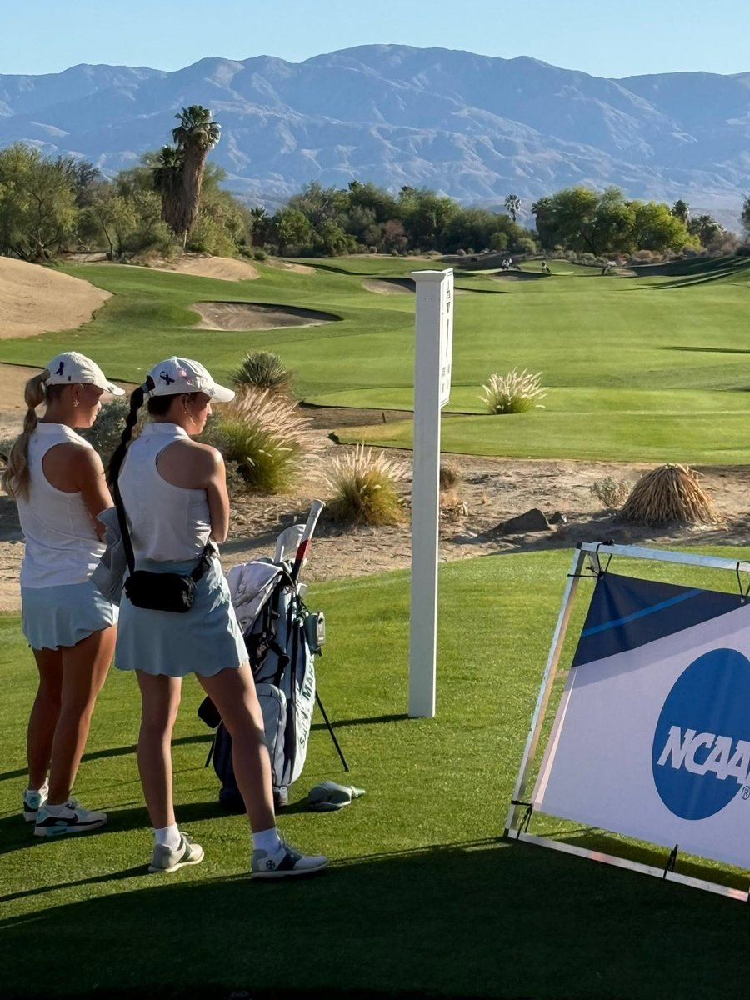
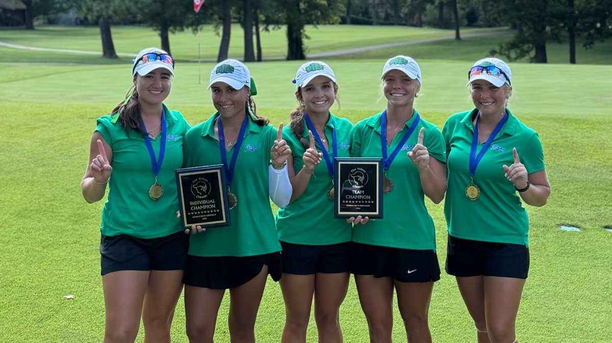
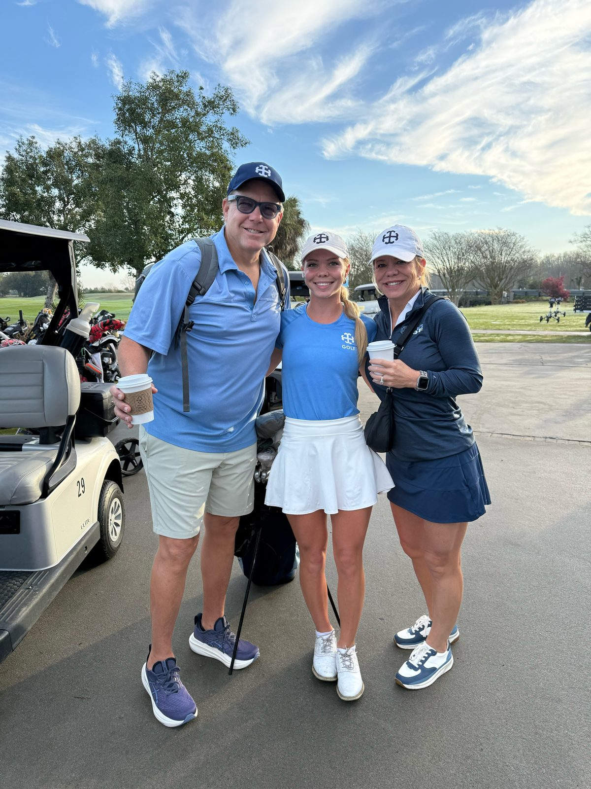
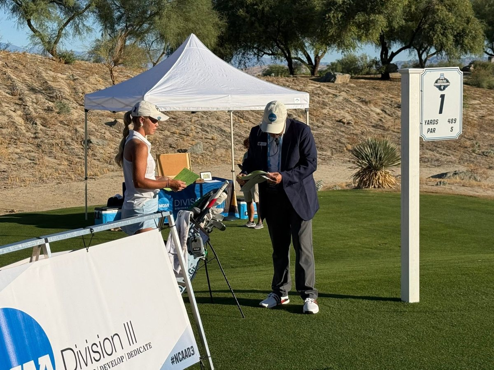
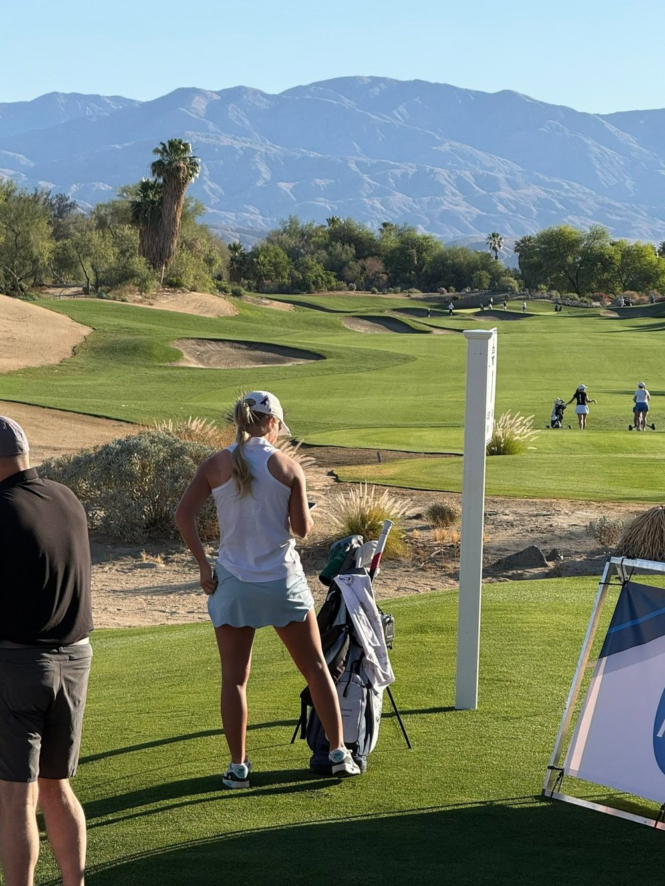
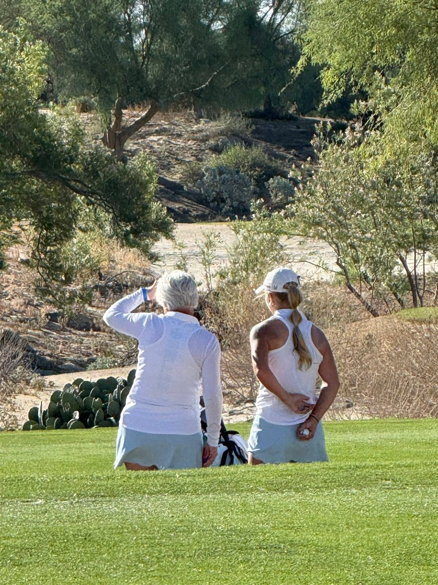
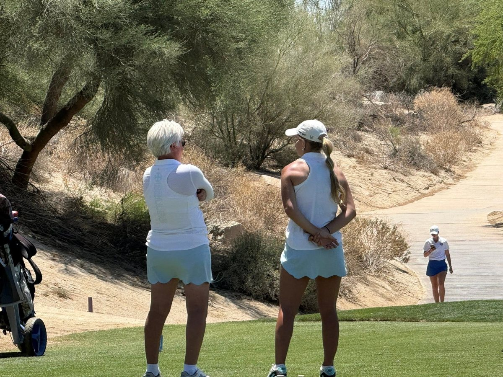
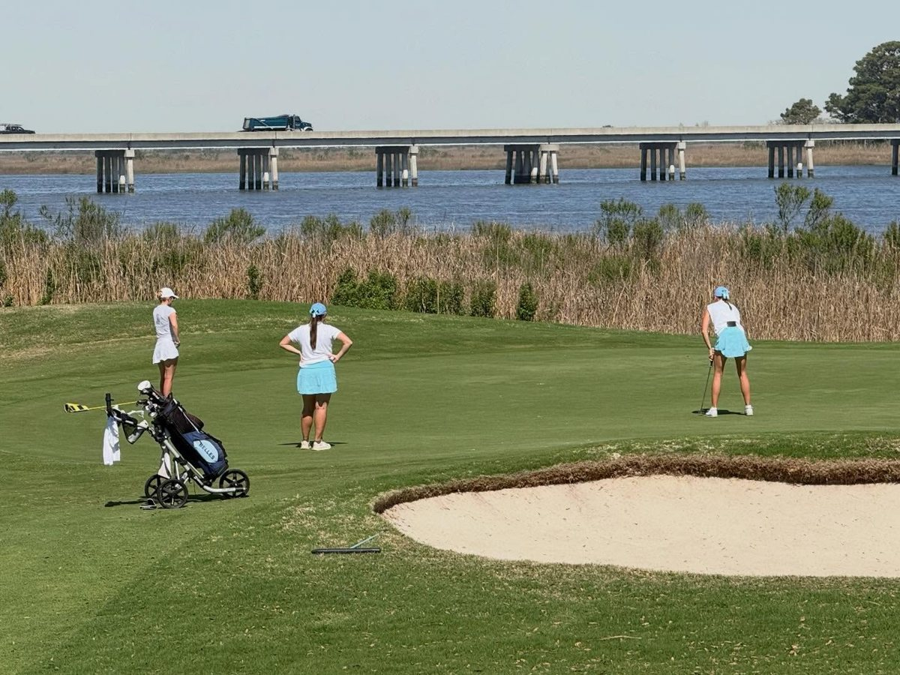
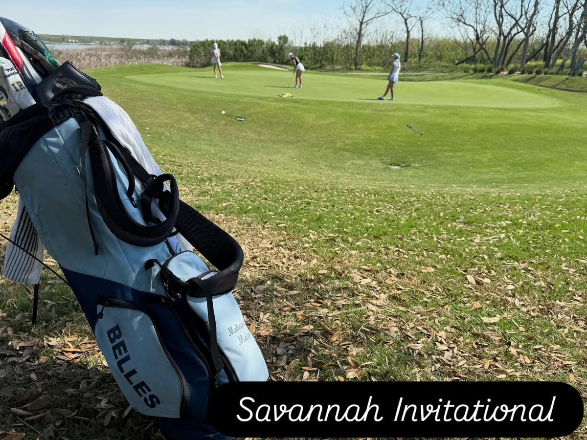

- School
- University of West Florida
- Class
- Junior
- Hometown
- Richmond, Texas
- High school
- George Ranch High School
- Coaches
- Head coach Kristen Dorsey · Assistant coach Lauren Lamm
Melanie Maier is a junior on the West Florida women’s golf team from Richmond, Texas, and a graduate of George Ranch High School. She joined UWF in 2026 from Saint Mary’s College (Notre Dame, Ind.), where she played two NCAA Division III seasons and studied nursing.
At Saint Mary’s she played in the NCAA Division III Championships both years. As a freshman in 2024-25 she posted a team-best 76.6 scoring average, won two MIAA Jamborees, tied for 47th at nationals (78-76) and was named MIAA Most Valuable Golfer. As a sophomore in 2025-26 she again had the team’s lowest scoring average (77.42), with 17 of her 21 rounds in the 70s, won an MIAA Jamboree and the Trine Spring Classic, and shot 158 at nationals, the second-best score on her team. She was All-MIAA First Team both seasons.
In UWF’s first season as a Division I program, Melanie helped the Argonauts win The Velvet Classic in a playoff, the program’s first Division I tournament title. She birdied her final hole to help force the playoff and shot her best round of the event, a closing 73 (+1) that moved her up 12 spots.
⛳ A proud GolfMDVIP athlete.
Honors & distinctions
- Two-time NCAA Division III Championships competitor with Saint Mary’s: T47 (154) in 2025 and 158 in 2026 source
- Two-time All-MIAA First Team (2024-25 and 2025-26) source
- 2024-25 MIAA Most Valuable Golfer source
- Four college individual titles: MIAA Jamborees at Holland and Tecumseh, Mich. (2024-25), an MIAA Jamboree at The Medalist Club (2025-26, co-medalist) and the Trine Spring Classic (2026) source
- MIAA Athlete of the Week: twice in 2024-25 and again in 2025-26 source
- Belles Athlete of the Week (October 2025) source
- CSC Academic All-District (2025-26) source
- Lowest team scoring average at Saint Mary’s both seasons: 76.6 (2024-25) and 77.42 (2025-26) source
- Member of UWF’s first Division I tournament champion: The Velvet Classic, 2026 source
Results by season
2026-27 · Junior · West Florida (fall)
| Event | Date | Finish | Scores | Source |
|---|---|---|---|---|
| The Velvet Classic: team won in a playoff, UWF’s first D-I title | Sep 14–15, 2026 | T47 | 80-84-73 = 237 (+21) | Source |
| Tulane Classic | Sep 8–9, 2026 | T39 | 74-80-78 = 232 (+16) | Source |
2025-26 · Sophomore · Saint Mary’s (NCAA D-III)
| Event | Date | Finish | Scores | Source |
|---|---|---|---|---|
| NCAA Division III Championships (2nd-best score on the team) | May 2026 | — | 77-81 = 158 | Source |
| Trine Spring Classic | Spring 2026 | 1st | — | Source |
| MIAA Championships | Spring 2026 | — | 152 (36 holes, season low) | Source |
| MIAA Jamboree #2, The Medalist Club, Marshall, Mich. | Oct 2025 | T1 (co-medalist) | 73 (+1) | Source |
2024-25 · Freshman · Saint Mary’s (NCAA D-III)
| Event | Date | Finish | Scores | Source |
|---|---|---|---|---|
| NCAA Division III Championships | May 2025 | T47 | 78-76 = 154 | Source |
| WashU Spring Invite | Spring 2025 | — | 73 (season low) | Source |
| MIAA Jamboree, Tecumseh, Mich. | 2024-25 | 1st | 73 (season low) | Source |
| MIAA Jamboree, Holland, Mich. | 2024-25 | 1st | — | Source |
| Illinois Wesleyan Fall Classic | Fall 2024 | — | 151 (36 holes, season low) | Source |
Team highlights
- Won The Velvet Classic (Sep 14–15) in a sudden-death playoff over Austin Peay. It was UWF’s first title as a Division I program, and its 882 (+16) set a tournament record for the team source
- Mariana Arronte won the Velvet individual title at −2, UWF’s first D-I individual win, and was named ASUN Women’s Golfer of the Week source
- Year 1 in NCAA Division I and the ASUN Conference (Fall 2026) source
- Did not travel to The Robbie (Oct 11–13) because of Hurricane Isaias. Next: The Judson, Oct 25–27, Hattiesburg, Miss. source

From the GolfDoc’s feed
Photos from Michael’s family album and public Facebook posts. Tap a linked photo to open its post.







Links
#MelanieMaier #ArgoUp #GoArgos · Every result above links to its official source. Last checked Oct 17, 2026.